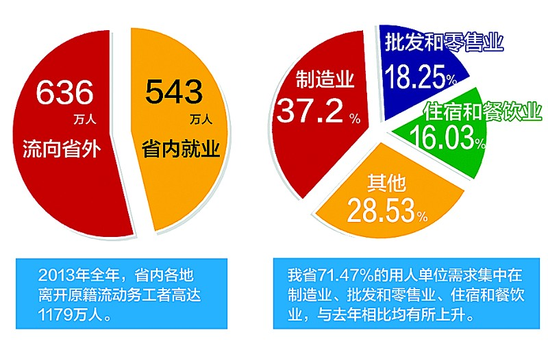

湖北日报讯
2013年，省内各地离开原籍流动务工者高达1179万人，其中543万人在省内就业，636万人流向省外。
636万人，这是一个惊人的数字。须知，我省常住人口数尚不足6000万。
省劳动就业管理局最新出炉的这组统计数据，提出了一个沉重的问题：如何留住600多万出省务工者？
这是破解省内企业招工难的关键，也直接关系到我省经济运行的后劲。
困局
日前，在武汉国际会展中心的一场招聘会上，几名求职者在武汉海尔电器公司展位前仔细阅读招聘简章，招聘人员连忙打招呼：“公司对普工基本没有要求，来多少，我们要多少，来了就能直接上岗。”
这是今春省内劳动市场最典型的画面：务工者不慌不忙，企业心急火燎，“零门槛”招聘的企业越来越多。
又是一年招工季。
又是一年招工难。
“门槛”一降再降 依然招不满人
经济体量在我省一枝独大的武汉，一向是省内用工需求的晴雨表。据武汉市人力资源市场统计，今年武汉市用工缺口约9万至11万人，较去年只升不降。
武汉的联想、富士康、海尔、美的，都是缺工量较大的企业，其所缺工种以一线普工为主，月薪在2000元至4500元之间。联想武汉生产基地招聘负责人称，因为产能扩张，不得不跑遍武汉市郊区、襄阳等地招人。
在襄阳市，为期35天的“春风行动”提供12万个就业岗位，比去年多2万。从节后的招聘情况来看，缺口仍然不小。
记者探访时发现，与去年相比，省内不少企业对求职者年龄、学历、性别等方面已明显放宽。宜昌，大量企业将招工年龄从35岁放宽到40岁，初中以下都可以接受。黄石，今年有近40%的岗位没有性别要求，而去年同期这一比例尚不足20%。
省劳动就业管理局介绍，从行业需求来看，我省71.47%的用人单位需求集中在制造业、批发和零售业、住宿和餐饮业，分别占总需求的37.20%、18.25%和16.03%，与去年相比均有所上升。从各地情况来看，黄石、十堰等地制造业用工需求所占比重较高，达一半以上；武汉、咸宁、恩施等地住宿和餐饮业需求居首，其他城市多集中在制造业、批发零售业和住宿餐饮业。
跳槽频繁 抢人大战成常态
不少招聘会人潮涌动，但一天下来，企业却感叹没招到多少人。这是为何？
省劳动就业管理局城镇就业处负责人介绍，每年的缺工大户以劳动密集型企业为主，对19-35岁的新生代劳动力需求最大，这一群体对工作强度、舒适度、工作环境等要求得更加细致，不满意就会跳槽换岗，由此造成的人员流动性是造成缺工的原因之一，抢人大战已成常态。
年前在沌口一家电器加工厂从事包装工的枣阳小伙子梁鹏，今年准备换个企业，他觉得现在的工作太累了，虽然月薪有3200多元，但经常加班在3小时以上，每月只休4天。他说，一天到晚在生产线上插电子元件就像机器人，没有时间娱乐休息，多挣几百块钱也没意思。
在武汉经济开发区的汽车零配件企业专场招聘会上，在一家零部件企业做总装工的小袁称，他现在起薪1300元、综合工资2800元，但附近另一家公司起薪1500元、综合工资有3000元以上，他决定和几个老乡一起跳槽。
武汉市人力资源市场处李永洪主任介绍，受经济形势影响，劳动密集型产业大量缺工，但年轻劳动力本来供应量就有限，而这些年轻人更多愿意到沿海地区去看一看，留下来的，从事工业和制造业的意愿也大幅趋少，一遇配套不完善或者环境不满意，随时就走人。“在本地经济产业转型为知识密集型以前，这种结构性缺工将持续存在，企业的招聘成本还将继续攀升。”
对策
武汉探索“积分入户”
在武汉举行的多场招聘会上，职校毕业生最为抢手。
武汉市经信委主任余信国分析，目前，武汉制造业在复兴同时面临转型，该市引进大项目集中在汽车、电子、装备制造、生物医药等方面，多为高端制造业。“工业倍增”虽然会提供大量的岗位，但主要瞄准有一定技术的高素质工人。
如何留住企业青睐的技术工？采访中，很多一线工人认为，在工厂打工应有上升空间，能够通过努力进入企业中高层。
武汉市教育局近日称，年内将根据省里安排，全面推行技能高考，技术工人可以边工边学，以技能参加高考，学有成就者甚至可获得专业硕士。
武汉作为省会城市，具有人才磁石效应。最近，该市出台《2014年全面深化改革工作要点》，提出从今年起探索外来工“积分入户”。
中等城市奇招迭出
武汉城市圈其他地区面临的招工压力更大，故而留人奇招迭出。
仙桃市推出“用工联盟”，让各企业在生产淡旺季互相借调员工。该市就业局向用工单位免费提供交流平台，建立“用工联盟”QQ群，协调企业之间开展“错峰借人”，立即得到燕京啤酒、旺旺食品、亲亲食品、康舒电子等多家重点企业热捧。
潜江市经济面临转型，从服装特色向水产、食品、家具多业发展，当地原有的七八万服装业从业人员存量迅速分流。该市为帮助企业招工，在当地电视台免费滚动播放招工广告，并在社区服务站组织下岗职工培训，向企业输送。
孝感的做法是“眼见为实”。该市人社局成立工作专班，摸清辖区人力资源状况，从1月17日起，就组织多批返乡农民工到孝感高新区工业园实地考察维达纸业、华工高理等企业，请农民工留在家乡就业，起到了一定效果。
鄂州市形成了政府、企业、学校三方联动机制。市就业局建立的劳动力资源信息库和QQ群，不仅用于企业发布招工信息，还帮专业技校发布学生求职信息。目前，该市有8所定点大、中专及职业院校和10余家企业签订协议，订单式培训电工、焊工、服装、机械制造等人才。
汽车业订单招工的启示
记者调查发现，要让外出务工者留在本地，改变传统的招工模式已迫在眉睫。
在武汉，汽车产业试水订单培训尝到了甜头。
神龙汽车公司不仅在多所职业院校开办“神龙订单班”，还和第三方劳务派遣机构长期合作。目前，在合作院校订单招收的员工，已占到该企业总员工的1/3。“通过培训机构订单招工，可将企业的培训前移，这些前期投入换来高质量员工。”神龙汽车相关负责人表示，企业要做的事情就是：在订单招收的学员学习期间，委派技术人员进行针对性的技能培训指导；企业有计划地在硬件设施上支持合作学校，如为学校提供车间设备、发动机、零部件、整车等供教学使用。企业的收获是学员毕业后大多数都会留在企业，且素质更高。
订单式招工，如今在我省汽车行业已不鲜见。今年准备投产的上海通用武汉基地，拟于明年投产的东风雷诺，都已开始计划订单招工培训。“实践证明，‘培’比单纯的‘招’更能稳定员工、增加员工归属感。”武汉起点人力总经理朱运德说。
重视转型期用工新缺口
过去一周，百乐居房地产公司连续参加了4场招聘会，但100个置业顾问的岗位仅解决了10个。该公司人力资源经理冯丹抱怨：“很少有学校开设专门针对房地产经纪的课程，这导致应聘这类岗位的求职者都是一张‘白纸’。”她说，每位新员工进行一周的入职培训，成本是1100元-1400元不等，100名新员工培训花费至少在10万元以上。
这不是个例。记者发现，无论是武汉的工业倍增计划，还是省内其他城市的多元经济发展，均出现了过去未曾有的新的用工需求，而且数量巨大。
从这个意义上说，长期以来“结构性用工荒”的静态评价，不如换用“转型期用工缺口”的动态表述，更为确切。只有观念变化，才能及时调动社会资源，密切关注市场用工缺口变化，为企业定向培养所需人才。
让校企订单不再省外飞
去年，我省200多家技工院校共和全国500多家企业签订了订单培训协议，培训了7万多员工，但其中有4万多人都流向了省外的企业。这显示，省内校企合作发展仍显缓慢。
据悉，我省就业部门此前已经推出了一系列优惠政策，如给予培训补贴，对参与校企合作的企业在资金、税收等方面给予支持，企业发生的职工教育经费支出，不超过工资薪金总额2.5%的部分，可在税前扣除。
这么多利好政策，为何未能转化为推动解决“转型期用工缺口”的红利？省社科院研究员冯桂林表示，企业要深入校园寻找合适人才，学校也要走到市场推销自己，求职者也要有渠道走进学校再培训，这中间就需要渠道的疏通。
今年，为了提高校企合作的效率，我省引入了第四方的人才市场和劳务派遣机构，从求职者培训到上岗就业申领补贴期间，提供过桥资金和信用担保。近日，楚天金报联手省劳动就业管理局推出“订单招工升级版”，促成用人单位与第四方机构签订招工订单，第四方专业机构通过学校对求职者进行培训，并送求职者上岗。
他山之石
上海“技能提升”计划
上海也存在招工难。年后，嘉定区的一场招聘会上，企业方共拿出490个岗位计划招聘5000余人。虽然企业方面对技术工种的工资已经开到6000元/月以上，但能够胜任的招聘者却寥寥无几。与此同时，普工岗位提供3000元左右的工资，却已经无法满足不少务工者的胃口。
为破解这种结构性失衡，上海已着手开展大规模的“技能提升行动”。
从2013年开始，上海计划用3年时间，完成50万农民工职业技能培训，其中在岗农民工国家职业资格等级的技能培训不低于50%，每年培养外来农民工高技能人才1万人，外来技能劳动者中的高技能人才比例每年提高1个百分点。政府将给予培训补贴。
上海农民工联席会议办公室相关负责人赵建德告诉记者，上海目前重点发力高附加值、高科技产业，而这就需要大量有技术能力的劳动力，通过培养高素质的务工者，一方面满足务工者对薪资的需求，另一方面，也为上海产业转型提供充足劳动力。
截至去年底，上海外来务工者人数达到380多万，按照上海的“技能提升行动”，意味着到2015年，其高素质务工者占比将达到1/7。
记者手记
要应急，也要谋远
近几年，每逢春节后招聘高峰，用工难、用工荒便成为当季热词。
是湖北劳动人口不足吗？非也。湖北省统计公报的数据显示，我省仍处人口红利期。
既然如此，为何招工难屡见不鲜？首先要看到打工群体的变化，新生代打工者已不再将薪水视为唯一追求，更加关注技能水平的提升和个人价值的体现，工作环境、生活条件、事业空间都成为新的考量，有意愿从事劳动密集型产业的求职者不断减少。这必然导致招工结构性失调。
人口红利拐点，毕竟也渐行渐近。国家统计局公布的数据显示，2012年，我国15至59岁劳动年龄人口在相当长时期里第一次出现了绝对下降，比上年减少345万人。人保部相关负责人日前也警示，我国正逐步告别劳动力无限供给的时代。随着农业劳动力持续大规模转移，农村已不再是一个取之不尽的“人力蓄水池”，人口红利将逐渐减弱乃至消失。
现状紧迫，湖北的当务之急，是如何留住外出务工人员的脚步，并高起点地享受人口红利？
人力资源专家指出，要避免“招人――流失――再招人”的困境，企业和相关部门必须树立“拴心留人”的理念。
一是提升薪资和福利待遇，进一步改善用工环境。具备良好薪资和用工环境的企业，人员也更稳定。二是加强职业培训，提高员工技能水平。三是提升员工升职空间，为他们谋划职业远景。更重要的是，要尽量满足员工的精神和事业需求，进一步培养企业文化，让他们能以企业为家。同时，政府也要尽快规划和完善城市功能，为企业招揽和留住员工提供良好外部环境。
要应急，也要谋远。长远地看，人口红利拐点终将到来，依靠劳动力密集型企业发展经济的时代终将过去。我省应加快产业转型升级的步伐，让高技能、高科技的产业散发光芒。
可以设想，通过产业水平的提升，一方面，让企业从过度依赖人力的生产模式中摆脱出来，不再为人所困；另一方面，让求职者从“机器人”式的生产中解放出来，提升劳动技能，获取良好待遇。如此，两相促进，良性循环，可望彻底解决招工与求职的两难，并为湖北经济腾飞积聚更多“正能量”。
客户端下载
官方微信